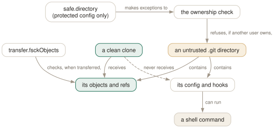

Day 21
Sharp edges and what next
Tracing what git really does, the repositories you should not trust, and where to read after this.
By the end of today you can
- switch on git's own tracing to see which command, config and repository it actually used
- explain “dubious ownership”, and handle a repository you did not create without running its code
- find the answer to your next git question in the documentation that is already on your machine
Ask git what it did
When git does something you cannot explain — the wrong repository, the wrong config, a command that is not what you typed — stop guessing and turn on its tracing. The ENVIRONMENT VARIABLES section of git(1) lists over a dozen GIT_TRACE* variables. Four of them cover almost every question you will have.
$ GIT_TRACE=1 git last
git.c:808 trace: exec: git-last
run-command.c:673 trace: run_command: git-last
git.c:447 trace: alias expansion: last => log -1 --oneline
git.c:502 trace: built-in: git log -1 --oneline
174e028 Awkward names
Read that from the top: git first tried to run an external command called git-last, found none, expanded the alias, and ran the built-in log. GIT_TRACE_SETUP answers “which repository is this?”:
$ cd src && GIT_TRACE_SETUP=1 git status -s
trace.c:316 setup: git_dir: .git
trace.c:317 setup: git_common_dir: .git
trace.c:318 setup: worktree: /home/ada/p19
trace.c:319 setup: cwd: /home/ada/p19
trace.c:320 setup: prefix: src/
GIT_TRACE=1- Commands, aliases, child processes.
GIT_TRACE_SETUP=1- The repository, worktree and prefix git settled on.
GIT_TRACE2_PERF=1- A timed table of regions: index reading, status, diff, pack access.
GIT_TRACE_CURL=1- Full HTTP exchanges for https remotes.
Each accepts 1 or true for stderr, a number from 3 to 9 for that file descriptor, or an absolute path to append to.
A repository is code, not just data
The git(1) SECURITY section is short and worth reading word for word. Its argument: configuration options and hooks can run arbitrary shell commands. Because they are not copied by git clone, cloning an untrusted repository and inspecting it with git log is generally safe. But it is not safe to run git inside a .git directory that itself came from an untrusted source — a tarball, a USB stick, a shared directory — because its config and hooks run in the usual way.

.git is not.Since the April 2022 fix for CVE-2022-24765 (2.35.2, and back-ported to 2.30.3 onwards), git defends one common case automatically: it refuses to work in a repository owned by another user. The release notes give the scenario — a shell prompt that runs git status on every cd, and another user's .git in a scratch space above you, would run that user's commands. Reproduced here in a user namespace, with the repository chowned to another uid:
$ git status
fatal: detected dubious ownership in repository at '/srv/shared/own21'
To add an exception for this directory, call:
git config --global --add safe.directory /srv/shared/own21
safe.directory takes a path, a path ending in /* for everything below it, or * for everything. It is read only from protected configuration — system, global, or -c on the command line — so a repository cannot vouch for itself in its own .git/config. git -c safe.directory=$PWD status is the one-off form.
Check what arrives
transfer.fsckObjects makes fetch and receive run fsck on every incoming object and abort on anything malformed or suspicious — bad author lines, links to missing objects, a .GIT directory, a hostile .gitmodules. It defaults to false. A commit with a broken email, fetched with the setting on:
$ git clone --no-local ../bad21 dst
error: object 7277f63126af6fe310fea35c1d24307ad7908590: badEmail: invalid author/committer line - bad email
fatal: fsck error in packed object
fatal: fetch-pack: invalid index-pack output
Smaller edges
- typos
- By default
git stautsprints “The most similar command is status” and exits 1. Withhelp.autoCorrectset toprompt, git asksRun 'status' instead [y/N]?— and when it is not running on a terminal it prints only the error, without the suggestion. The values1andtruemean “run immediately” in 2.52, not a delay. - case
- On a case-insensitive filesystem (macOS, Windows)
git initsetscore.ignoreCase = true; on Linux it writes nothing. A repository containing bothREADMEandreadmecannot be checked out faithfully on the former. Rename withgit mv, never by hand. - line endings
core.autocrlfconverts per machine and makes the result depend on who committed. Thetextandeolattributes from Day 14 put the rule in the repository instead, where it belongs.- Git 3.0
/usr/share/doc/git/BreakingChanges.adoclists what is planned, with no release date yet:mainas the default branch (hence the hint on everygit initwithoutinit.defaultBranch), SHA-256 as the default hash,reftableas the default ref storage, and removals such asgit whatchanged— which in 2.52 already refuses to run and suggestsgit log --raw --no-merges.
Where to read next
Everything in this course was checked against git 2.52.0, and every command's manual page is on your machine. The guides git(1) points to are worth reading now that the vocabulary is yours:
$ git help -g
The Git concept guides are:
…
everyday A useful minimum set of commands for Everyday Git
faq Frequently asked questions about using Git
glossary A Git Glossary
tutorial A tutorial introduction to Git
workflows An overview of recommended workflows with Git
…
git help glossary— the definitions this course has been using, in git's own words.git help workflows— how the git project itself uses branches, merges and rebases.git help revisionsandgit help config— the two reference pages you will open most. Day 7 and Day 12 were an introduction to them.- The Git User's Manual in
/usr/share/doc/git/user-manual.html, whose Git concepts chapter is the long form of Day 1.
Today's habit
Keep one reflex: when git surprises you, set GIT_TRACE=1 or GIT_TRACE_SETUP=1 before you search the web. And before running git in a directory someone else made, clone it first.
New vocabulary
Commands
| Command | Does |
|---|---|
git clone --no-local <path> | Clone a local path through the normal transport, so objects are checked, not hard-linked. |
git help -g | List the concept guides: tutorial, everyday, glossary, workflows, faq… |
git help -a | List every command git knows, including git-* executables on your PATH. |
git help <command> | Open that command's manual page. Same as git <command> --help. |
Options
| Option | Does |
|---|---|
GIT_TRACE=1 | Print alias expansion, built-in and external command execution to stderr. |
GIT_TRACE_SETUP=1 | Print which .git, worktree, cwd and prefix git settled on. |
GIT_TRACE2_PERF=1 | Print timed regions — where the milliseconds went. |
GIT_TRACE_CURL=1 | Dump HTTP traffic. Authorization headers and cookies are redacted unless GIT_TRACE_REDACT=0. |
GIT_TERMINAL_PROMPT=0 | Never prompt for credentials on the terminal; fail instead. For scripts and cron. |
safe.directory | Directories you trust although someone else owns them. Honoured only in protected (global, system, command-line) config. |
transfer.fsckObjects | Check every object received by fetch or push, and abort on malformed or suspicious ones. |
help.autoCorrect | What to do with a mistyped command: show a suggestion (default), prompt, run it, or never. |
Today's configappend to ~/.gitconfig
Check objects as they arrive. Off by default; it catches corrupt or deliberately malformed objects (bad idents, hostile .gitmodules, .GIT directories) before they land in my repository, at the cost of some CPU on large fetches.
[transfer]
fsckObjects = true
When I mistype a command and git finds exactly one likely match, ask before running it. Never runs anything without a y; off a terminal it prints only the error.
[help]
autocorrect = prompt
git reads its config afresh on every command, so there is nothing to reload. Check what is in force, and which file it came from, with git config list --show-origin.
Drillsdo these in a real terminal, today
Self-check
Answer out loud first, then unfold.
A colleague sends you a tarball of a repository to debug. You unpack it and run git log. Why is that a risk even though the files are now owned by you?
Because the .git directory came from them, including .git/config and .git/hooks. Settings such as core.fsmonitor, core.pager or a diff driver's textconv are commands, and git runs them “in the usual way”. The git(1) SECURITY section is explicit: it is not safe to run git inside a .git from an untrusted source. The ownership check does not help, because unpacking made you the owner.
Clone it first: git clone --no-local ./unpacked clean. The clone gets objects and refs, not config or hooks, and --no-local sends them through the transport, where transfer.fsckObjects can check them.
You set transfer.fsckObjects, then git clone ../suspect a repository containing a malformed commit. The clone succeeds. Why did the check not fire?
Because a clone from a local path does not transfer objects at all: it hard-links or copies .git/objects directly, so nothing passes through the receiving side's checks. Verified in 2.52: the plain local clone succeeded; the same clone with --no-local or a file:// URL failed with badEmail: invalid author/committer line. For anything you do not trust, use --no-local.
On a shared build machine, git status in /srv/build/app fails with “detected dubious ownership”. Someone suggests git config --global --add safe.directory '*'. What does that give away?
The check exists because running git in a repository means obeying its config and hooks. On a multi-user machine, any user who can create a directory — /tmp/x/.git, say — above or inside a path you work in could otherwise make your git run their code. '*' switches the protection off for every repository, forever.
Trust the one directory you mean: safe.directory = /srv/build/app, or /srv/build/* for everything under it. It is only honoured in global, system or command-line config, so a repository cannot declare itself safe.
git last is your alias for log -1 --oneline. One day it prints something completely different. GIT_TRACE=1 shows trace: exec: git-last. What happened?
Something installed an executable called git-last on your PATH, and git looks for external git-<name> commands before expanding aliases — the trace shows the exec: git-last attempt first, and when it succeeds the alias is never consulted. Verified: with both present, the external command ran. Built-in commands, by contrast, always win over both, which is why you cannot alias status to something else.
Cheat sheet
GIT_TRACE=1 git ... # commands, aliases, subprocesses
GIT_TRACE_SETUP=1 git ... # which .git / worktree / prefix
GIT_TRACE2_PERF=1 git ... # where the time went
GIT_TERMINAL_PROMPT=0 # scripts: fail, never prompt
git -c safe.directory=$PWD status # one-off trust
git clone --no-local SRC DST # untrusted local repo: fresh, checked
# never run git inside a .git you did not create
git help -g | git help glossary | git help revisions
Everything through Day 21
Commands
| Command | Does |
|---|---|
git init -b main | Create an empty repository whose first branch is main. |
git hash-object <file> | Print the object name the file's contents would get. Writes nothing without -w. |
git cat-file -t <object> | Print an object's type: blob, tree, commit or tag. |
git cat-file -p <object> | Pretty-print an object's contents. The one command that shows what git really stores. |
git cat-file -s <object> | Print an object's size in bytes. |
git ls-tree -r <tree-ish> | List every blob in a tree, recursively, with mode and hash. |
git rev-parse HEAD | Turn a name into the full hash it currently means. |
git count-objects -v | Count loose and packed objects and the disk they use. |
git status -s | Show each changed path with two columns: index vs HEAD, then working tree vs index. |
git add <path> | Copy the file's current contents into the index. Writes the blob immediately. |
git add -p | Walk through each hunk and choose which ones go into the index. |
git diff | Show what differs between the index and the working tree — what add would stage. |
git diff --staged | Show what differs between HEAD and the index — what commit would record. |
git restore <path> | Overwrite the working-tree file with the index version. Discards unstaged edits. |
git restore --staged <path> | Reset the index entry to HEAD's version. The working tree is untouched. |
git commit [-a] | Turn the index into a tree, wrap it in a commit, move the branch to it. -a first stages every modified tracked file (never untracked ones). |
git rm --cached <path> | Remove a path from the index only; the file stays on disk, now untracked. |
git branch | List local branches; * marks the one HEAD names. |
git branch -v | List branches with the commit each points at and its subject line. |
git branch <name> | Create a branch at HEAD without switching to it. |
git switch <branch> | Point HEAD at a branch and update the index and working tree to its commit. |
git switch -c <name> | Create a branch at HEAD and switch to it in one step. |
git switch - | Switch back to the branch you were on before. |
git switch --detach <commit> | Point HEAD directly at a commit, with no branch in between. |
git branch -d <name> | Delete a branch, refusing unless it is merged into its upstream (or into HEAD, if it has none). |
git branch -D <name> | Delete a branch unconditionally. |
git branch -m <old> <new> | Rename a branch. |
git merge <branch> | Bring the branch's history into the current one: fast-forward if possible, else a merge commit. |
git merge --ff-only <branch> | Merge only if it is a fast-forward; otherwise refuse and change nothing. |
git merge --no-ff <branch> | Always create a merge commit, even when a fast-forward was possible. |
git merge --abort | Give up a conflicted merge and restore the state before it started. |
git merge-base A B | Print the best common ancestor of two commits — the version a merge compares against. |
git ls-files -u | List the unmerged index entries: one line per stage per conflicted path. |
git show :1:<path> | Show the base version of a conflicted file. :2: is yours, :3: theirs. |
git checkout --conflict=merge <path> | Recreate the conflict markers in a file you mangled; =zdiff3 works too. |
git clone <url> | Copy a repository: all objects, its branches as origin/*, and one local branch checked out. |
git remote -v | List remotes with their fetch and push URLs. |
git remote add <name> <url> | Register another repository under a short name. |
git fetch | Download new objects and move the remote-tracking refs. Never touches your branches or files. |
git pull | Fetch, then integrate the upstream into the current branch. |
git push | Send the current branch's commits and move the branch of the same name on the remote. |
git push -u origin <branch> | Push and record origin/<branch> as this branch's upstream. |
git push origin --delete <branch> | Delete a branch on the remote. |
git branch -vv | List branches with their upstream and ahead/behind counts. |
git log --oneline --graph --all | Draw every branch's history, one line per commit. |
git log -p | Show each commit's diff against its parent. |
git log --stat | Show which files each commit touched, and how much. |
git log --author=<re> --since=<date> | Keep only commits whose author matches, from a date onwards. |
git log -- <path> | Keep only commits that changed the path. The -- separates paths from revisions. |
git log --follow -- <file> | Follow one file's history back through renames. |
git log -S<string> | Pickaxe: keep commits that change how many times the string occurs. |
git log -G<regex> | Keep commits whose diff adds or removes a line matching the regex. |
git log -L :<func>:<file> | Show the history of one function (or -L 10,20:file for a line range). |
git show <commit> | Show one commit: message and diff. |
git blame -w -C <file> | Annotate each line with its last commit, ignoring whitespace and seeing moves between files. |
git rev-parse --verify <rev> | Resolve an expression to one object name, or fail. The checker for everything today. |
git rev-parse --abbrev-ref <rev> | Print the short ref name an expression means: @{u} becomes origin/main. |
git rev-parse --symbolic-full-name <rev> | Print the full ref name, e.g. refs/remotes/origin/main. |
git log A..B | List commits reachable from B but not from A: what B has that A lacks. |
git log --left-right A...B | List commits on either side but not both, marked < or >. |
git diff A...B | Diff from the merge base of A and B to B: what B changed since they split. |
git show <rev>:<path> | Print a file as it was in any commit, without checking anything out. |
git show :<path> | Print the version of a file currently staged in the index. |
git commit --amend | Replace the last commit with a new one built from the current index. Opens the editor. |
git commit --amend --no-edit | Amend, keeping the message: for the file you forgot to add. |
git reset --soft <rev> | Move the branch to rev. Index and working tree untouched. |
git reset <rev> | Move the branch and reset the index to it (--mixed, the default). Working tree untouched. |
git reset --hard <rev> | Move the branch, and overwrite index and working tree to match. Destroys uncommitted work. |
git reset -- <path> | Copy path from HEAD into the index: unstage. The branch does not move. |
git restore --source=<rev> <path> | Overwrite a working-tree file with its version from any commit. |
git revert <commit> | Make a new commit that undoes commit. The safe undo for published history. |
git clean -n | List the untracked files -f would delete. Add -d for directories, -x for ignored files. |
git clean -fd | Delete untracked files and directories. Ignored files survive unless -x. |
git rebase <upstream> | Replay the commits in <upstream>..HEAD on top of upstream. With no argument, uses @{u}. |
git rebase --onto <new> <old> [<branch>] | Replay <old>..<branch> on top of new: transplant part of a branch. |
git rebase --continue | After resolving and git adding a conflict, commit it and go on. |
git rebase --skip | Drop the commit that stopped, and go on. |
git rebase --abort | Put the branch back exactly where it was before the rebase started. |
git push --force-with-lease | Overwrite the remote branch only if it is still where your remote-tracking branch says. |
git push --force-if-includes | With the lease: also refuse if the remote tip was fetched but never integrated locally. |
git rebase -i <base> | Open the todo list for <base>..HEAD in your editor, then run it. |
git rebase --edit-todo | Re-open the remaining todo list while a rebase is stopped. |
git commit --fixup=<commit> | Commit the staged change as fixup! <subject>, to be melted into commit later. |
git commit --fixup=amend:<commit> | Like --fixup, but the squash also replaces the target's message. |
git rebase -i --autosquash <base> | Move every fixup!/squash!/amend! commit under its target and mark it. |
git rebase -x '<cmd>' <base> | Run cmd after every replayed commit; stop at the first failure. |
git range-diff <base> <old> <new> | Pair up the commits of two versions of a branch and show how each changed. |
git reflog | List where HEAD has pointed, newest first, as HEAD@{n} entries. Short for git reflog show HEAD. |
git reflog show <branch> | List where one branch has pointed. Its entries are <branch>@{n}. |
git reflog --date=iso | Show each entry's time instead of its index: main@{2026-09-25 09:00:00 +0200}. |
git log -g | Walk a reflog with the full git log formatting options. |
git reset --hard ORIG_HEAD | Undo the last reset, merge or rebase: go back to where it started. |
git branch <name> <commit> | Give a recovered commit a name again, so it is safe for good. |
git fsck --unreachable | List objects nothing refers to — not even a reflog. Where dropped stashes are found. |
git config list --show-origin --show-scope | List every setting in effect, with the file and scope it came from. |
git config get <name> | Print the value git will use. Exit status 1 if unset. |
git config set [--global] <name> <value> | Write a setting, to the repository's .git/config unless told otherwise. |
git config unset [--global] <name> | Remove a setting from one file. Exit status 5 if it was not there. |
git config edit --global | Open ~/.gitconfig in your editor. |
git -c <name>=<value> <cmd> | Override one setting for one command, above every file. |
git help <alias> | Print what an alias expands to. |
git stash push -m <msg> | Save staged and unstaged changes to tracked files as a stash entry, and clean the tree. |
git stash push -u | Include untracked files. -a also takes ignored ones. |
git stash push --staged | Stash only what is in the index. |
git stash list | List entries; stash@{0} is the newest. |
git stash show -p [stash@{n}] | Show an entry as a patch. Add --include-untracked to see its untracked files. |
git stash apply [--index] | Reapply an entry and keep it. --index restores what was staged as staged. |
git stash pop [--index] | Apply, and drop the entry only if it applied cleanly. |
git stash drop [stash@{n}] | Delete one entry. |
git stash branch <name> | Create a branch at the commit the stash was made on, apply it there, drop it. |
git worktree add <path> [-b <new>] [<branch>] | Check out a branch in a new directory that shares this repository. |
git worktree list | List every working tree with its HEAD and branch. |
git worktree remove <path> | Delete a clean worktree. git worktree prune forgets ones you deleted by hand. |
git check-ignore -v <path> | Print the file, line and pattern that decides whether path is ignored. |
git check-ignore -v --no-index <path> | The same for a path that is already tracked. |
git status --ignored | Also list ignored files, marked !!. |
git ls-files -o -i --exclude-standard | List every untracked file the ignore rules are hiding. |
git add -f <path> | Add a file despite an ignore rule. |
git check-attr -a -- <path> | Print every attribute set on a path. |
git ls-files --eol | Show line endings in the index and working tree, and the attribute in force. |
git add --renormalize . | Re-apply the current text/eol attributes to every tracked file in the index. |
git archive HEAD | Write a tarball of a commit, leaving out export-ignore paths. |
git cherry-pick -x <commit> | Apply one commit's change on top of HEAD as a new commit, noting the original in the message. |
git cherry-pick A..B | Pick every commit in the range, oldest first. A itself is excluded. |
git cherry-pick --continue | --skip | --abort | Resume after resolving, drop the current commit, or return to where you started. |
git log --cherry-mark --left-right A...B | Mark commits on each side with = when the other side has an equivalent patch. |
git tag -a v1.2 -m <msg> [<commit>] | Create an annotated tag: a tag object with tagger, date and message. |
git tag v1.2 [<commit>] | Create a lightweight tag: just a ref. |
git tag -l 'v1.*' | List tags matching a glob. |
git push origin <tag> | Publish one tag. Tags are not pushed with branches by default. |
git push origin --delete <tag> | Delete a tag on the remote. |
git describe [--tags] [--dirty] [--always] | Name HEAD relative to the nearest annotated tag, e.g. v1.1-1-gc6dcec7. |
git bisect start <bad> <good>... | Begin a search between a known-bad and one or more known-good commits. |
git bisect good | bad | Mark the checked-out commit, and move to the next midpoint. |
git bisect skip | This commit cannot be tested; pick a nearby one instead. |
git bisect run <cmd> [args] | Test every step automatically: exit 0 good, 1–127 bad, 125 skip, anything else abort. |
git bisect reset | End the session and return to the branch you started on. |
git bisect log | Print the session so far as a replayable script. |
git bisect replay <file> | Re-run a saved log, e.g. after correcting one wrong answer. |
git bisect view --oneline | List the commits still in the running. |
git bisect terms | Show the words in use for the two states. |
git merge -X ours <branch> | Merge normally, but settle each conflicting hunk in favour of this side. Clean hunks from the other side still land. |
git merge -s ours <branch> | Record a merge that keeps this tree exactly. The other branch's changes are discarded. |
git checkout --ours <path> | During a conflict, take stage 2 for that path. In a rebase, stage 2 is the upstream. |
git checkout --theirs <path> | Take stage 3 for that path. In a rebase, stage 3 is your own commit being replayed. |
git checkout -m <path> | Re-create the conflict markers in a file you have mangled or resolved wrongly. |
git log --merge | During a conflict, list only the commits on either side that touch the conflicted paths. |
git diff AUTO_MERGE | Show only what you have edited since git wrote the conflicted files. |
git rerere status | List paths whose conflict rerere has recorded a preimage for. |
git rerere diff | Show the resolution you are about to teach rerere. |
git rerere forget <path> | Drop a recorded resolution that turned out to be wrong. |
ls .git/hooks | See the sample hooks git init installed. None of them runs: they end in .sample. |
chmod +x .git/hooks/pre-commit | Enable a hook. A hook without the executable bit is ignored, with a hint. |
git commit --no-verify | Skip the pre-commit and commit-msg hooks for this commit. prepare-commit-msg still runs. |
git push --no-verify | Skip the pre-push hook for this push. |
git hook run <name> | Run a hook by hand, exactly as git would find it. Fails if it does not exist. |
git hook run --ignore-missing <name> | Run it if it exists; succeed quietly if not. For scripts. |
git rev-parse --show-toplevel | Print the root of the working tree. The first line of most scripts. |
git rev-parse --git-dir | Print where the repository is — .git, or somewhere else entirely. |
git rev-parse --is-inside-work-tree | Print true, or fail with status 128 outside a repository. |
git for-each-ref --format=… refs/heads/ | Print one formatted line per ref: the scriptable git branch. |
git status --porcelain=v2 --branch -z | Machine-readable status, NUL-terminated, with branch and ahead/behind headers. |
git log --format=… | Print commits through a template of %H, %an, %ad, %s and friends. |
git ls-files -z | List tracked paths raw, NUL-terminated, without C-quoting. |
git cat-file --batch-check | Read object names on stdin; print hash, type and size for each. One process for thousands of objects. |
git var GIT_EDITOR | Print the editor git would actually launch, after all the fallbacks. |
git count-objects -vH | Count loose and packed objects, with human-readable sizes. |
git gc | Pack loose objects, pack refs, expire reflogs, prune old unreachable objects. |
git gc --prune=now | Also delete unreachable objects at once, ignoring the two-week grace period. |
git verify-pack -v <pack>.idx | List every object in a pack: size, packed size, delta depth and base. |
git fsck | Check every object's hash and every link between objects. |
git maintenance run --task=<task> | Run one maintenance task now: gc, commit-graph, prefetch, loose-objects, incremental-repack… |
git maintenance start | Register this repository and install an hourly background schedule. |
git init --bare | Create a repository with no working tree — the shape of every server-side repository. |
git clone --no-local <path> | Clone a local path through the normal transport, so objects are checked, not hard-linked. |
git help -g | List the concept guides: tutorial, everyday, glossary, workflows, faq… |
git help -a | List every command git knows, including git-* executables on your PATH. |
git help <command> | Open that command's manual page. Same as git <command> --help. |
Options
| Option | Does |
|---|---|
user.name / user.email | Set the identity written into every commit's author and committer lines. |
init.defaultBranch | Name the first branch of every new repository. |
commit.verbose | Show the staged diff below the message in the commit editor. |
branch.sort | Set the default order of git branch; -committerdate puts recent work first. |
merge.conflictStyle | Choose the marker style: merge (default), diff3 or zdiff3. |
pull.ff | only: let git pull fast-forward and refuse anything else. |
push.autoSetupRemote | Make a plain git push of a new branch create it upstream and track it. |
fetch.prune | Delete remote-tracking refs whose branch was deleted on the remote, on every fetch. |
diff.colorMoved / diff.colorMovedWS | Colour moved blocks differently from added and removed ones; allow-indentation-change still recognises a re-indented move. |
push.useForceIfIncludes | Make every --force-with-lease behave as if --force-if-includes were given. |
rebase.autoSquash | Make rebase -i autosquash by default. Interactive mode only. |
rebase.updateRefs | Also move any branch that points into the rebased range (--update-refs). |
gc.reflogExpire | Age after which reflog entries are pruned. Default 90 days. |
gc.reflogExpireUnreachable | Same, for entries no longer reachable from the ref's tip. Default 30 days. |
core.logAllRefUpdates | Whether reflogs are kept. True by default with a working tree, false in a bare repository. |
includeIf."gitdir:<dir>/".path | Read another config file only for repositories under dir. |
alias.<name> | Define git <name>. A leading ! makes it a shell command. |
GIT_CONFIG_GLOBAL | Read this file instead of ~/.gitconfig; /dev/null for none. |
GIT_PREFIX | Set for shell aliases: the directory you ran them from, relative to the top level. |
core.excludesFile | Your personal ignore file. Defaults to ~/.config/git/ignore — usually leave it. |
diff.<driver>.textconv | A program that turns a file into text for diffs, used by paths with diff=driver. |
tag.sort | Default ordering for git tag -l; version:refname sorts v1.10 after v1.9. |
push.followTags | Also push annotated tags that point into the history being pushed. |
--first-parent | On bisect start: follow only first parents, so merged side branches count as one step. |
--term-old=<w> --term-new=<w> | On bisect start: use your own words instead of good/bad. |
rerere.enabled | Record every conflict and its resolution, and replay them on the next identical conflict. |
rerere.autoUpdate | Stage a path once rerere has resolved it, instead of leaving it for you to git add. |
core.hooksPath | Look for hooks in this directory instead of $GIT_DIR/hooks. Replaces it; does not add to it. |
GIT_INDEX_FILE | Set for a pre-commit hook: the index being committed. Unset it before running git in another repository. |
-C <path> | Run as if started in <path>. Global option: goes before the subcommand. |
--no-pager / -P | Never pipe through the pager, even on a terminal. |
:(exclude)… / :!… | Pathspec magic: everything except the matching paths. |
gc.pruneExpire | How old an unreachable object must be before gc deletes it. Default 2.weeks.ago. |
gc.cruftPacks | Keep unreachable objects in a cruft pack rather than loose. Default true. |
gc.auto | Loose-object count above which git gc --auto packs. Default 6700. |
--git-dir / --work-tree | Point git at a repository and a working tree explicitly; turns off discovery. |
GIT_TRACE=1 | Print alias expansion, built-in and external command execution to stderr. |
GIT_TRACE_SETUP=1 | Print which .git, worktree, cwd and prefix git settled on. |
GIT_TRACE2_PERF=1 | Print timed regions — where the milliseconds went. |
GIT_TRACE_CURL=1 | Dump HTTP traffic. Authorization headers and cookies are redacted unless GIT_TRACE_REDACT=0. |
GIT_TERMINAL_PROMPT=0 | Never prompt for credentials on the terminal; fail instead. For scripts and cron. |
safe.directory | Directories you trust although someone else owns them. Honoured only in protected (global, system, command-line) config. |
transfer.fsckObjects | Check every object received by fetch or push, and abort on malformed or suspicious ones. |
help.autoCorrect | What to do with a mistyped command: show a suggestion (default), prompt, run it, or never. |